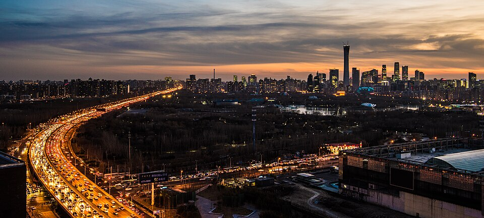
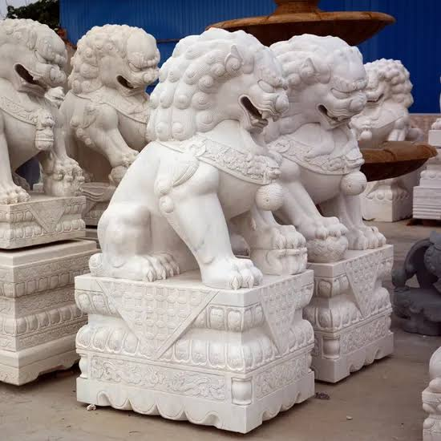
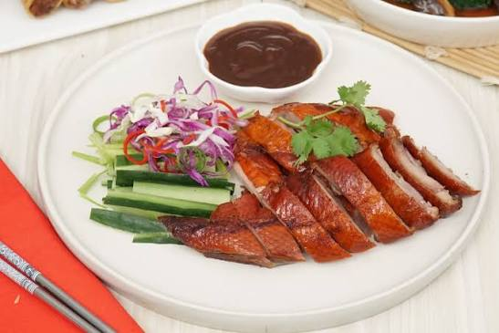
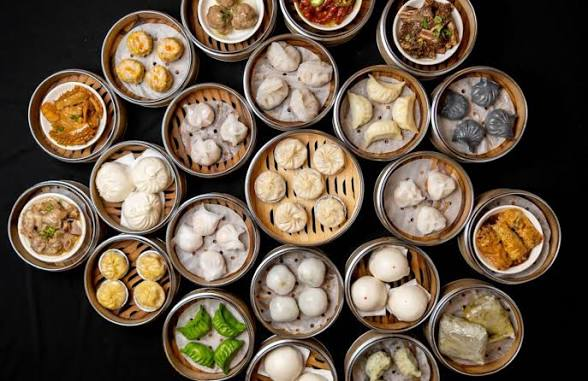
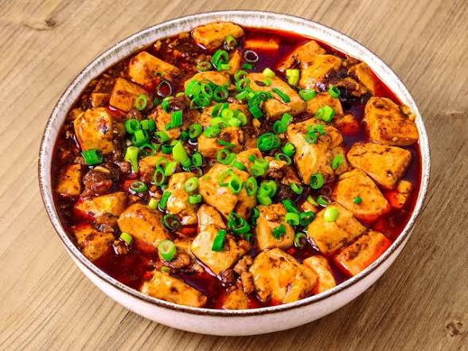
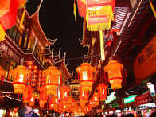

WELCOME
Explore the charm of China
Get to know various tourist attractions, culinary delights and unique Chinese culture
start exploring →DESTINATION
China tourism
Some interesting places you can visit in China.
The Great Wall of China
A winding wonder of the ancient world stretching over 8,850 km in China, with towers and walkways.
Lion Dance (Wu Shi / 舞狮):
A traditional dance featuring lion costumes to bring good luck, often performed during Chinese New Year.

Beijing
Beijing is the second largest city in China after Shanghai in terms of urban population, and is the national political, cultural and educational center.

Stone Lion Statue
A pair of lion statues (male and female) which are usually placed in front of the door of a temple, palace or building as a symbol of protection from negative energy.
Typical food
Chinese Cuisine
Get to know and try typical Chinese food.

peking duck
A Beijing specialty featuring duck meat with a very crispy, brown skin, usually served with pancakes, sliced spring onions, and peanut sauce.

Dim Sum
A collection of traditional small snacks from the Guangdong (Cantonese) region that are usually steamed or fried in small bamboo containers, such as hakau and siu mai.

Mapo Tofu
A Sichuan specialty of soft tofu cooked with minced meat, hot sauce, chilies, and Sichuan pepper that gives a numbing sensation.
CULTURE
Chinese Culture
Get to know the rich culture and traditions of Chinese society.
Spring Festival
The biggest celebration in the Chinese calendar is marked by the tradition of family gatherings, dinner together, displaying red lanterns, fireworks, and distributing Hongbao (angpao) containing money.

Yuanxiao Festival
The closing celebration of the Chinese New Year series on the 15th night of the lunar calendar, where thousands of lanterns are flown or hung with the tradition of guessing riddles.